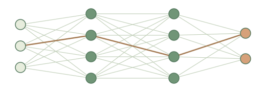

自适应特征 · 研究纲领
从特征学习，
理解泛化。
从抽象的特征映射回归出发，研究学习动力学；再与具体神经网络对照，不断修正理论假设。
整体策略
三个互补的分析视角，共同连接具体神经网络。
抽象特征映射回归族


理论应用与对照
网络反馈，修正假设

神经网络
在具体网络中检验理论，再将反馈带回特征映射族。
目标是连接神经网络动力学与泛化能力；具体结论仍取决于各项工作的模型与假设。
进一步了解
清华教师主页qianlin [at] tsinghua [dot] edu [dot] cn